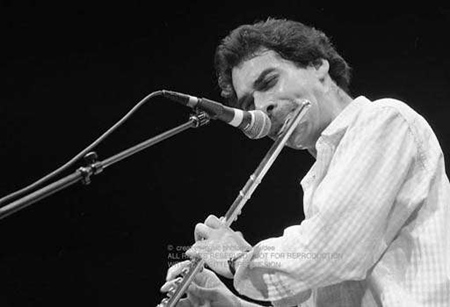

|
 |
 |
 |
 |
 |
ตระกูลประเภทเครื่องเป่าลมไม้ |
|
| ที่มา : https://www.youtube.com/watch?v=M5BiG3wKCkA | |
| เครื่องเป่าลมไม้ (Woodwind Instruments) เป็นการจัดประเภทเครื่องดนตรีสากล โดยเครื่องดนตรีประเภทเครื่องเป่าลมไม้นี้ แม้ตัวของเครื่องดนตรี อาจทำจากวัสดุต่างๆ มากมาย แต่ส่วนสำคัญที่ทำให้เกิดเสียง คือ ลิ้น (Reed) ซึ่งทำมาจากไม้ จึงได้ชื่อว่า เครื่องเป่าลมไม้นั่นเอง เครื่องเป่าลมไม้แบ่งได้อย่างกว้าง ๆ เป็น 2 ประเภทคือ | |
 |
|
1. ประเภทเป่าลมเข้าไปในรูเป่า (Blowing into a tube) หรือ เครื่องเป่าลมไม้ประเภทขลุ่ย ลำตัวมีลักษณะเป็นท่อ แบ่งตามลักษณะของการเป่าได้ 2 ประเภทคือ ประเภทเป่าตรงปลาย เช่น ขลุ่ยรีคอร์เดอร์ และประเภทเป่าลมเข้าทางด้านข้าง เช่น ฟลูต และปิคโคโล |
2. ประเภทเป่าลมให้ผ่านลิ้นของเครื่องดนตรี (Blowing through a reed) หรือ เครื่องเป่าลมไม้ประเภทปี่ ส่วนประกอบที่สำคัญคือมีลิ้น (Reed) เป็นตัวสั่นสะเทือน ส่วนที่เป็นลิ้นจะอยู่ตรงปลายด้านหนึ่งของปี่ เมื่อเป่าลมผ่านลิ้นให้เกิดการสั่นสะเทือน ลมจะเข้าไปในท่อซึ่งทำหน้าที่เป็นตัวขยายเสียงหรือตัวกำทอน แล้วออกไปยังปากลำโพง เครื่องดนตรีพวกปี่ยังจำแนกออกได้ตามลักษณะของลิ้นที่ใช้ เป็นประเภทลิ้นคู่ (Double reed) และลิ้นเดี่ยว (Single reed) |
เครื่องเป่าลมไม้ประเภทขลุ่ย เครื่องดนตรีกลุ่มนี้ได้แก่ ฟลูต (flute) เป็นเครื่องดนตรีสากลประเภทเครื่องเป่าลมไม้ ซึ่งแตกต่างจากเครื่องเป่าลมประเภทอื่น ๆ ที่กำเนิดเสียงจากการสั่นสะเทือนของลิ้น ฟลูต กำเนิดเสียงจากการผิวของลม ลักษณะเสียงของฟลูตจะมีความไพเราะ นุ่มนวล อ่อนหวาน
ปิคโคโล (Piccolo) เป็นเครื่องดนตรีสากลประเภทเครื่องเป่าลมไม้ รูปร่างคล้ายฟลุทแต่ขนาดเล็กกว่า และมีเสียงสูงกว่า 1 ออคเทฟ มีขนาดเล็กกว่าฟลุท 4 เท่า จึงทำให้มีคุณภาพเสียงที่สดใสและแหลมมาก เสียงในระดับต่ำของปิคโคโลจะดังไม่ชัดเจน ปิคโคโลจึงเหมาะที่จะใช้ในการเล่นในระดับเสียงกลางและเสียงสูงมากกว่าในระดับเสียงต่ำ ปิคโคโลในวงออร์เคสตรา คือในศตวรรษที่ 18 ด้วยสุ้มเสียงที่แหลมสูงของปิคโคโลนี้เองทำให้เราสามารถ ที่จะได้ยินเสียงปิคโคโลได้อย่างชัดเจน ถึงแม้ว่าเครื่องดนตรีชิ้นอื่นจะบรรเลงอยู่ก็ตาม |
|
เครื่องเป่าลมไม้ประเภทประเภทปี่ เครื่องดนตรีกลุ่มนี้ได้แก่
โอโบ (oboe) ที่ใช้ในปัจจุบันนี้มีมาตั้งแต่ศตวรรษที่ 17 ใช้ในการแสดงโอเปร่าฝรั่งเศส เรียกว่า Hautbois ในศตวรรษที่ 18 โอโบใช้เป็นเครื่องดนตรีหลักในวงออร์เคสตร้า เป็นเครื่องดนตรีเสียงสูงในกลุ่มเครื่องลมไม้ ซองในขณะนั้นมีรูปิดเปิดเพียง 2- 3 รูเท่านั้น ในศตวรรษที่ 19 โอโบได้พัฒนาในเรื่องระบบกลไก คีย์ กระเดื่อง สำหรับปิดเปิดรู เพื่อเปลี่ยนระดับเสียงให้เล่นสะดวกมากขึ้น จนในที่สุดโอโบ คือ เครื่องดนตรีหลักที่จะต้องมีใน วงออร์เคสตร้า โอโบเป็นเครื่องดนตรีที่เล่นยากมาก สิ่งที่เป็นอุปสรรคสำคัญอยู่ตรงที่ลิ้นคู่หรือลิ้นแฝด ผู้เล่นต้องสามารถเม้มริมฝีปาก และเป่าลมแทรกลงไประหว่างลิ้นคู่ทั้งสองที่บอบบางเข้าไปในท่อลม เทคนิคการควบคุมลมให้สม่ำเสมอเป็นสิ่งจำเป็นมากจึงต้องฝึกฝนกันเป็นเวลานาน
คอร์ แองเกลส์ (Cor Anglais or English horn) เป็นปี่ตระกูลเดียวกับโอโบแต่มีขนาดใหญ่กว่า และมีรูปร่างที่แตกต่างไปจากโอโบ ระดับเสียงต่ำกว่าโอโบและเวลาเล่นจะต้องมีสายติดกับลำตัวปี่โยงไปคล้องคอผู้เล่นเพื่อพยุงน้ำหนักของปี่ ปี่ชนิดนี้มีลำตัวยาวกว่าปี่โอโบ ดังนั้นเพื่อง่ายต่อการเป่า ส่วนที่ต่อจากที่เป่า(ลิ้น) กับลำตัวปี่จึงต้องงอโค้งเป็นมุมและเกิดคำว่า “อองเกล” (Angle) ขึ้นต่อมาคำนี้ได้เพี้ยนไปกลายเป็นอองแกลส์ (Anglais) ในภาษาฝรั่งเศส ซึ่งตรงกับภาษาอังกฤษว่า English ส่วนคำว่า “คอร์” (Cor) ในภาษาฝรั่งเศส ซึ่งตรงกับภาษาอังกฤษว่า ฮอร์น (Horn) คอร์ แองเกลส์นอกจากมีชื่อประหลาดแล้วยังมีรูปร่างที่น่าทึ่งอีกด้วย คือส่วนที่ต่อจากที่เป่า (ลิ้นคู่) เป็นท่อลมโลหะโค้งงอติดกับลำตัวปี่ ซึ่งปี่โอโบไม่มี ตรงปลายสุดที่เป็นปากลำโพง (Bell) ป่องเป็นกระเปาะกลม ๆ ซึ่งปี่โอโบมีลำโพงคล้ายปี่คลาริเนต
บาสซูน (Bassoon) เป็นปี่ขนาดใหญ่ ใช้ลิ้นคู่เช่นเดียวกับโอโบ รูปร่างของบาสซูน ค่อนข้างจะประหลาดกว่าปี่ชนิดอื่น ๆ เนื่องจากความใหญ่โตของท่อลม ซึ่งมีความยาวถึง 109 นิ้ว แต่เพื่อไม่ให้ยาวเกะกะ จึงใช้วิธีทบท่อลิ่มให้เหลือความยาวประมาณ 4 ฟุตเศษ บาสซูนมีน้ำหนักมากจึงต้องมีสายคล้องคอช่วยพยุงน้ำหนัก (Sling) เพื่อให้มือทั้งสองของผู้เล่นขยับไปกดแป้นต่าง ๆ ได้สะดวก เสียงของบาสซูนต่ำนุ่มลึก ถือเป็นแนวเบสของกลุ่มเครื่องลมไม้ นอกนั้นยังสามารถเล่นทำนองเดียวได้อย่างงดงามอีกด้วย
คลาริเน็ต (Clarinet) เป็นเครื่องดนตรีจำพวกเครื่องเป่าลมไม้(woodwind instruments) ที่พัฒนามาจากเครื่องดนตรีในสมัยกลางเรียกว่า chalumeau แคลริเน็ตเป็นเครื่องดนตรีที่มักทำจากไม้หรือพลาสติก ทำให้เกิดเสียงโดยใช้ลิ้นเดี่ยว (single reed) ซึ่งรัดติดกับปากเป่าเช่นเดียวกับแซกโซโฟน ช่วงเสียงแคลริเน็ต (Bb) เริ่มตั้งแต่ D (เขียนว่า E แต่เล่นแล้วออกเสียง D เนื่องจากเป็นแคลริเน็ตบีแฟลต มีเสียงต่ำกว่าที่เขียนไว้ 1 tone) เรื่อยขึ้นไปประมาณ 3 คู่แปด ชาวเยอรมันชื่อ Johann Christoph Denner ประดิษฐ์คลาริเน็ตเมื่อราวปี ค.ศ. 1700 และเริ่มใช้กันอย่างแพร่หลายในวงออร์เคสตราเมื่อปี ค.ศ. 1780 และแทนที่โอโบในวงโยธวาทิตได้ในที่สุด ่ |
|


{kind=link}